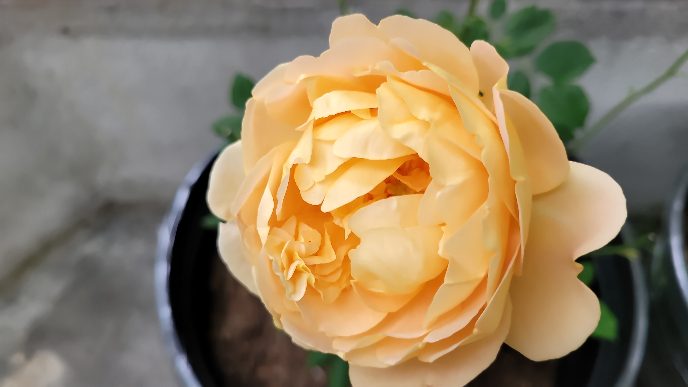

I am Uma Lakkaraju, a web developer with a passion for creating engaging and user-friendly digital experiences. With a background in computer science and a keen eye for design, I specialize in building responsive websites and applications that meet the needs of users across various platforms
My approach to web development is centered around collaboration and continuous learning. I enjoy working closely with clients and teams to understand their goals and translate them into functional, aesthetically pleasing websites. I am proficient in a range of technologies including HTML, CSS, JavaScript, and various frameworks, which allows me to adapt to different project requirements.
With experience in web development and design, I've worked on various projects ranging from wireframes to full website implementations. I'm constantly learning and staying up-to-date with the latest web technologies and design trends. I am excited to apply what I've learned to create innovative and effective web solutions. My fovorite hobbies include:
